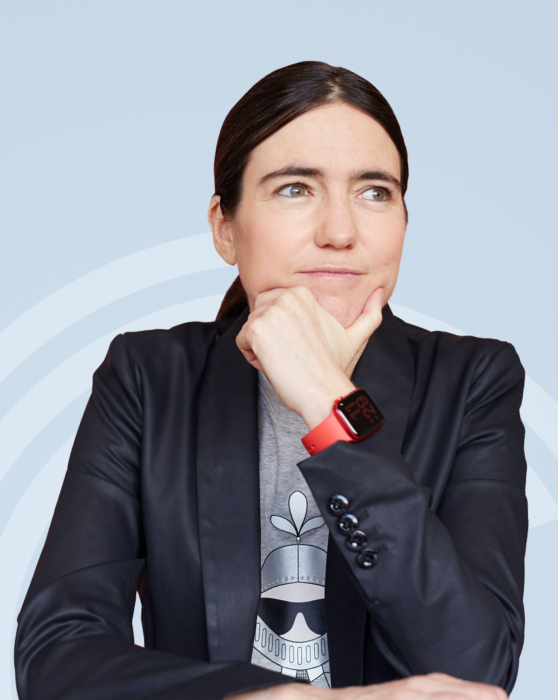
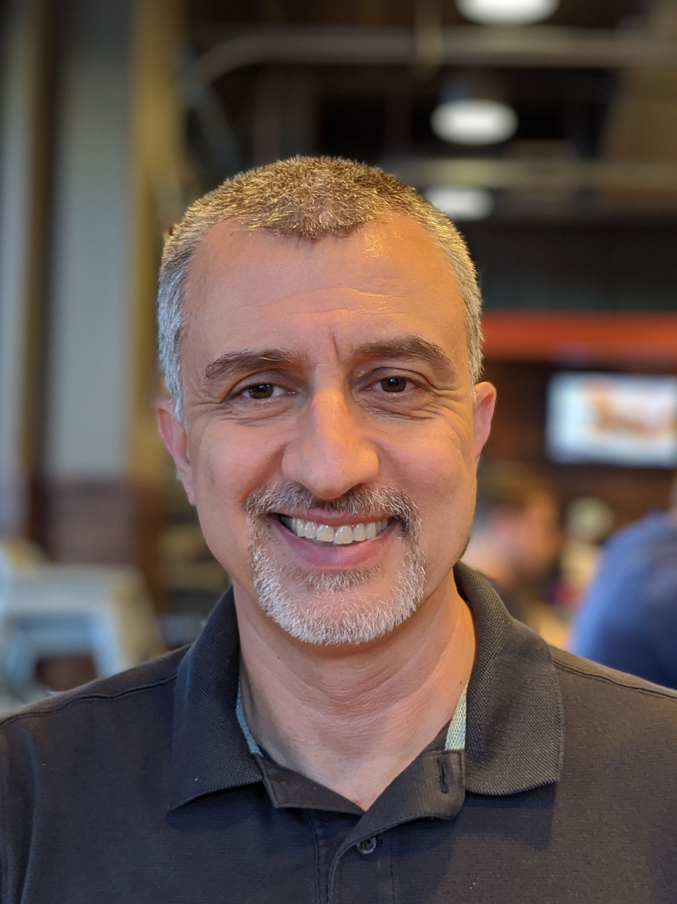
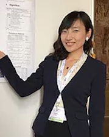

Program
June 19, 2021
Workshop program (Pacific Time)
Recorded videos (numberred by event order)
Raquel Urtasun
Waabi, University of Toronto
Raquel Uratsun a Full Professor in the Department of Computer Science at the University of Toronto and a co-founder of the Vector Institute for AI. From 2017 to 2021 she was the Chief Scientist and Head of R&D at Uber ATG. From 2015-2017 she was a Canada Research Chair in Machine Learning and Computer Vision. She received her Ph.D. from the Ecole Polytechnique Federal de Lausanne (EPFL) in 2006 and did her postdoc at MIT and UC Berkeley. She is a recipient of an NSERC EWR Steacie Award, two NVIDIA Pioneers of AI Award, a Ministry of Education and Innovation Early Researcher Award, three Google Faculty Research Awards, an Amazon Faculty Research Award, a Connaught New Researcher Award, a Fallona Family Research Award and two Best Paper Runner up Prize awarded CVPR in 2013 and 2017. She was also named Chatelaine 2018 Woman of the year, and 2018 Toronto's top influencers by Adweek magazine.
Peyman Milanfar
Google Research
Peyman is a Principal Scientist / Director at Google Research, where he leads the Computational Imaging team. Prior to this, he was a Professor of Electrical Engineering at UC Santa Cruz from 1999-2014. He was Associate Dean for Research at the School of Engineering from 2010-12. From 2012-2014 he was on leave at Google-x, where he helped develop the imaging pipeline for Google Glass. Most recently, Peyman's team at Google developed the digital zoom pipeline for the Pixel phones, which includes the multi-frame super-resolution ("Super Res Zoom") pipeline, and the RAISR upscaling algorithm. In addition, the Night Sight mode on Pixel 3 uses our Super Res Zoom technology to merge images (whether you zoom or not) for vivid shots in low light. Peyman received his undergraduate education in electrical engineering and mathematics from the University of California, Berkeley, and the MS and PhD degrees in electrical engineering from the Massachusetts Institute of Technology. He holds 15 patents, several of which are commercially licensed. He founded MotionDSP, which was acquired by Cubic Inc. (NYSE:CUB). Peyman has been keynote speaker at numerous technical conferences including Picture Coding Symposium (PCS), SIAM Imaging Sciences, SPIE, and the International Conference on Multimedia (ICME). Along with his students, he has won several best paper awards from the IEEE Signal Processing Society. He is a Distinguished Lecturer of the IEEE Signal Processing Society, and a Fellow of the IEEE "for contributions to inverse problems and super-resolution in imaging."
Chelsea Finn
Stanford University, Google
Chelsea Finn is an Assistant Professor in Computer Science and Electrical Engineering at Stanford University. Finn's research interests lie in the capability of robots and other agents to develop broadly intelligent behavior through learning and interaction, which is well aligned with special devices and platforms our workshop works on. To this end, her work has included deep learning algorithms for concurrently learning visual perception and control in robotic manipulation skills, inverse reinforcement methods for scalable acquisition of nonlinear reward functions, and meta-learning algorithms that can enable fast, few-shot adaptation in both visual perception and deep reinforcement learning. Finn received her Bachelor's degree in Electrical Engineering and Computer Science at MIT and her PhD in Computer Science at UC Berkeley. Her research has been recognized through the ACM doctoral dissertation award, the Microsoft Research Faculty Fellowship, the C.V. Ramamoorthy Distinguished Research Award, and the MIT Technology Review 35 under 35 Award, and her work has been covered by various media outlets, including the New York Times, Wired, and Bloomberg. Throughout her career, she has sought to increase the representation of underrepresented minorities within CS and AI by developing an AI outreach camp at Berkeley for underprivileged high school students, a mentoring program for underrepresented undergraduates across four universities, and leading efforts within the WiML and Berkeley WiCSE communities of women researchers.
Stanley H. Chan
Purdue University
Dr. Stanley H. Chan is currently an associate professor in the School of Electrical and Computer Engineering and the Department of Statistics at Purdue University, West Lafayette, IN. Dr. Chan received the Ph.D. degree in Electrical Engineering and the M.A. degree in Mathematics from the University of California at San Diego, in 2011 and 2009, respectively, and the B.Eng. degree (with first class honor) in Electrical Engineering from the University of Hong Kong in 2007. Prior to joining Purdue, he was a postdoctoral research fellow at Harvard John A. Paulson School of Engineering and Applied Sciences from 2012 to 2014. His research interests include signal and image processing, applied statistics, and large-scale numerical optimization. In particular, he and his students made pioneering contributions to the model-based and data-driven computational imaging methods based on non-convex optimization.
Yunchao Wei
University of Technology Sydney
Dr. Yunchao Wei received the Ph.D. degree from Beijing Jiaotong University, China, in 2016. He is currently an Assistant Professor with the University of Technology Sydney, NSW, Australia. He was a Postdoctoral Researcher with the Beckman Institute, University of Illinois at Urbana–Champaign, IL, USA, from 2017 to 2019. His current research interests include computer vision and machine learning. Dr. Wei is an ARC Discovery Early Career Researcher Award Fellow from 2019 to 2021. He is a leading researcher in the field of semantic segmentation, human parsing, and weakly-supervised learning.
Bihan Wen
Nanyang Technological University, Singapore
Dr. Bihan Wen received the B.Eng. degree in Electrical and Electronic Engineering (EEE) from Nanyang Technological University (NTU), Singapore, in 2012, the MS and PhD degrees in Electrical and Computer Engineering from University of Illinois at Urbana-Champaign (UIUC), USA, in 2015 and 2018, respectively. From 2018 to 2019, he was with Dolby Laboratories, California, USA, and YITU Technology, Singapore. He is now with School of EEE at Nanyang Technological University as a Nanyang Assistant Professor. His research interests span areas of machine learning, computer vision, image and video processing, computational imaging, and big data applications. He is an elected member of the IEEE Computational Imaging (CI) Technical Committee. He regularly served as the area chairs for ICIP, ICASSP and ICME. He co-organized the IEEE SPS Webinar Series SPACE, LCI @ ICCV 2019 and 2021, and the Demo Session of MIPR 2019. He was the recipient of the 2016 Yee Fellowship, and the 2012 Professional Engineers Board (PEB) Gold Medal. He won the 1st Place Award in the 3MT Thesis Competition at ICME 2018, the Best Presentation Award at 2018 Midwest Research Summit in USA, and the Best Talk Award at 2018 CSL Student Conference. His coauthored paper received the Top 10% Best Paper Award at ICIP 2014, and another received the Best Paper Runner-Up Award at ICME 2020.
Sifei Liu
NVIDIA
Dr. Sifei Liu is a senior research scientist at Nvidia Research in Santa Clara, US. She received her PhD from the University of California Merced, department of EECS, where she was advised by Prof. Ming-Hsuan Yang. Before that, she obtained her master’s in ECE from University of Science and Technology of China (USTC), under the supervision of Prof. Stan.Z Li and Prof. Bin Li, and bachelor’s in control science from North China Electric Power University (NCEPU). Her research interests are in computer vision (low-level vision, semantic segmentation, 3D scene understanding), deep learning (graph-structured networks, self-supervised learning), and the combination of both. She also worked as an intern student in Baidu IDL, multimedia lab in CUHK, and NVIDIA research. She was the recipient of Baidu Graduate Fellowship in 2013, and NVIDIA Pioneering Research Award in 2017.
Shanghang Zhang
University of California, Berkeley
Dr. Shanghang Zhang is a postdoctoral research fellow in the Berkeley AI Research (BAIR) Lab, the Department of Electrical Engineering and Computer Sciences, UC Berkeley, working with Prof. Kurt Keutzer and Prof. Trevor Darrell. Her research interests cover deep learning, computer vision, and reinforcement learning, especially on machine learning with limited training data, including low-shot learning, domain adaptation, and meta-learning, which enables the learning system to automatically adapt to real-world variations and new environments. She was one of the “2018 Rising Stars in EECS” (a highly selective program launched at MIT in 2012, which has since been hosted at UC Berkeley, Carnegie Mellon, and Stanford annually). She has also been selected for the Qualcomm Innovation Fellowship (QInF) Finalist Award and Chiang Chen Overseas Graduate Fellowship. She received her Ph.D. from Carnegie Mellon University in 2018.